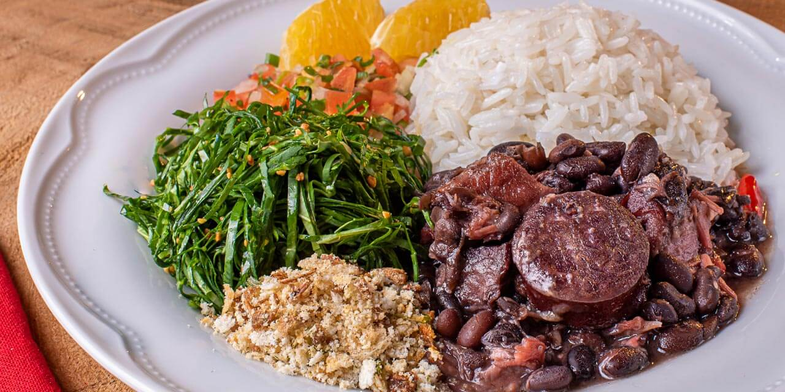
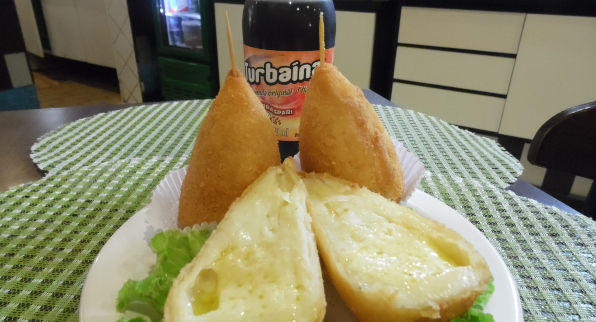

Comida do Campo
A comida do campo no Paraná é caracterizada por pratos mais simples e tradicionais, utilizando ingredientes frescos cultivados localmente, como arroz, feijão, milho, carne de porco e galinha, e produtos lácteos.
Comida da Cidade
Na cidade, os pratos são mais variados e influenciados pela globalização, com uma mistura de culinária de diversas regiões do Brasil e do mundo. Restaurantes de comida rápida, pratos mais sofisticados e ingredientes industrializados são comuns.
Comparação
A comida do campo é mais simples e ligada à produção local, enquanto a comida da cidade tem uma oferta mais diversificada, com influências externas e maior uso de produtos industrializados.